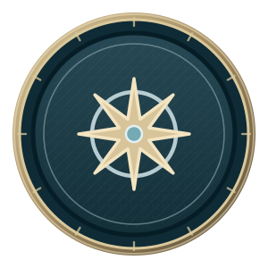

Starter Compass
Progresso documentado das contribuições.
Exibido agoraTécnico
Operações fictícias

SOBRE
Introdução fictícia.
Sua imagem, apresentação e distintivo desbloqueado selecionado podem ser editados. Função, departamento, acesso e pontos são controlados separadamente.
NÍVEL ATUAL
Faltam 25 pontos compartilháveis para Bronze.
Private contributions stay private.
DISTINTIVOS E PROGRESSO
Para trocar o distintivo exibido, use Editar meu perfil e escolha um modelo desbloqueado.
Os modelos desbloqueados anteriormente continuam disponíveis. Os distintivos são visuais; não concedem autoridade nem certificam competência.
NÍVEL EXIBIDO
BLOQUEADO
HISTÓRICO AUDITÁVEL
Concessões, cancelamentos e restaurações de pontos permanecem visíveis no histórico imutável.
São exibidos até 80 registros recentes de contribuição. Este é seu histórico privado, separado das novidades da equipe.
Pontos concedidos · Tarefa · 19 de out. de 2026, 12:00 UTC
Restrito · somente você vê esta contribuição aquiEstado produzido pelo handler após uma resposta de erro fictícia. Os campos ficam protegidos para repetir a mesma operação.
Somente informações compartilháveis; a identificação do perfil diferencia homônimos.
ATUALIZAÇÕES AUTORIZADAS DA EQUIPE
As permissões da fonte são verificadas antes de exibir nomes, títulos, reações ou contagens.
Atualizações recentes exibidas: 1 · até 40 por período
completed a taskAna · homônima fictícia
19 de out. de 2026, 12:00 UTC